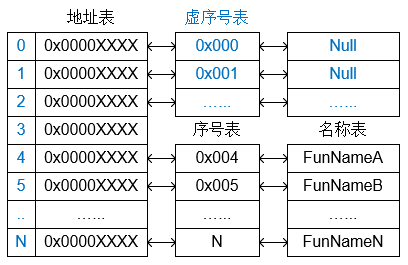
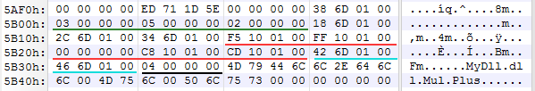
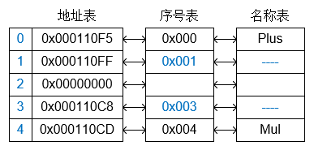
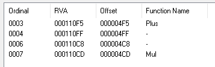
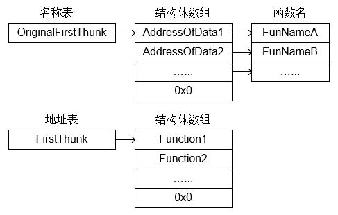

前言
在PE文件结构中，数据目录表对应的信息很重要，这里对其中几个常用的进行介绍。
导出表
导出表是PE文件为其他应用程序提供API的一种信息导出方式，其结构体如下
1 | typedef struct _IMAGE_EXPORT_DIRECTORY { |
从逻辑上讲，导出表由3部分构成，分别是地址表、名称表、序号表。地址表存储的是所有导出内容的
地址信息，名称表存储的是所有导出的名称信息，而序号表与名称表一一对应，表明该名称在地址表中
的索引位置。其中对应关系如下图所示

我们自己创建一个DLL程序，并使用 .def 文件来定义导出信息：
注意：第一个语句可以使用 LIBRARY 定义DLL的名称，然后可以使用 EXPORTS 来定义导出的函数名，
在函数名的后边可以加上 @ 来指定序号值，序号范围是 从1到N，如果不想导出函数名，还可以在序号
后边加上 NONAME 语句，如下代码所示
1 | LIBRARY MyDll |
查看实际生成的文件内容如下所示

其中绿色划线的信息为 Base(3) NumberOfFunctions(5) NumberOfNames(2)，相关信息如下所示

由于序号表只有 0x0000 和 0x0004，中间的序号就是虚序号。同时由于我们只定义了4个函数，在
地址表中就会存在一个内容为 0x00000000 的用来占位的成员。
在加载到内存后，其调用序号还需要加上索引基址 Base 信息，即 Plus 的调用序号是 3 + 0x0000 = 3，Mul 的调用序号是 3 + 0x0004 = 7，下图为使用 LordPE 工具查看的信息。
如果我们只通过 名称表 来获取函数地址，就不需要加上这个基址，直接使用对应的偏移就行。

导入表
导入表是PE文件从其他第三方程序中导入API供自己使用的机制，其结构体如下
1 | typedef struct _IMAGE_IMPORT_DESCRIPTOR { |
其中 OriginalFirstThunk 和 FirstThunk 指向的是一个结构体数组，结尾是整体为0x0的结构体，
这个结构体在32位和64位中不同，是一个联合体信息，定义如下
1 | typedef struct _IMAGE_THUNK_DATA32 { |
ForwarderString：当导入表的 ForwarderChain 不为0时，此值有效，并指向包含有转发函数与导出
这个函数的映像文件名的字符串RVA。Function：导入表导入函数的实际内存地址，此字段仅在此映像被加载，且此结构为IAT的前提下有效。Ordinal：导入表导入函数的导出序号，当 IMAGE_THUNK_DATA 的最高位为1时，此值有效。AddressOfData：指向 IMAGE_IMPORT_BY_NAME 结构，当以上3个值都未生效时，此值有效。
这里就产生一个疑问 Function 和 AddressOfData 如何进行区分：在PE文件被系统地加载之前，输入表
的 INT 与 IAT 都是使用 AddressOfData 字段指向一个 IMAGE_IMPORT_BY_NAME 结构的，但当我们的PE
文件被加载时，操作系统首先会逐个遍历 INT 中的内容，并取出已导入函数的内存地址，然后将这些动态
获取的地址逐一填入对应的 IAT 中，此时操作系统使用的就是 Function 这个成员。
1 | typedef struct _IMAGE_IMPORT_BY_NAME { |
如下为导入表内容的关系图

注意：导入表的序号并不是不可靠的，因为编译器在生成程序时，使用的序号是SDK库文件 .lib 中的，
但是实际运行时对应的 .dll 有可能是不同操作系统的。比如系统中的 Kernel32.dll 模块。
为了避免因此发生加载错误，最可靠的处理方法是首先使用本程序导入的序号，在导出此函数的DLL中
查找与此序号所对应的函数名，如果目标DLL中与此序号对应的API函数名与本程序中此序号对应的函数名
一致，则直接调用，否则使用函数名来搜索比对获取API地址。